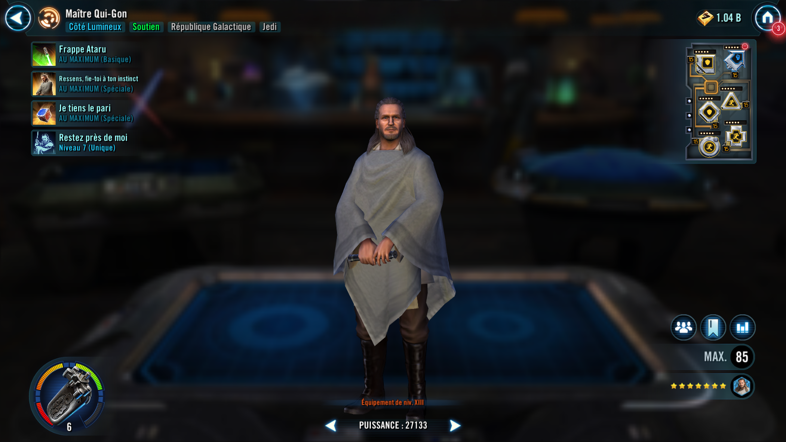
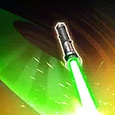
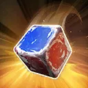

Master Qui-Gon
A bold Support willing to take a chance to save and assist his allies.
A bold Support willing to take a chance to save and assist his allies.


Deal Special damage and inflict Breach on target enemy for 1 turn. During Master Qui-Gon's turn, all Galactic Republic allies with Heal Over Time or Protection Over Time gain Defense Up for 1 turn. If Master Qui-Gon has Accuracy Up, all Galactic Republic allies recover 10% Health and Protection.
Dispel all buffs on target enemy. If target enemy had any buffs dispelled this way, they are inflicted with Buff Immunity for 1 turn, and remove 50% Turn Meter.
If the ally in the Leader slot was Queen Amidala at the start of battle, Master Qui-Gon Exposes all enemies for 2 turns and if an enemy is inflicted with Doubt, Stun them for 1 turn, which can't be resisted.
Master Qui-Gon gains 100% Defense for 2 turns and Legendary Battle Meditation for 1 turn, which can't be copied, dispelled, or prevented. If no allies are Taunting, all other non-Galactic Legend Galactic Republic allies Stealth for 2 turns. If an ally is Taunting, all non-Galactic Legend Galactic Republic allies gain Speed Up for 2 turns, instead.
This ability can't be evaded.

Roll a Chance Cube.
If the result is red: This ability has no effect.
If the result is blue: Deal Special damage based on 5% of his Max Health (+2% per stack of Queen's Protection) to all enemies. Dispel all debuffs on all Galactic Republic allies. Master Qui-Gon gains 25% Max Health and Max Protection (stacking, max 100%) for rest of the encounter and ally Padawan Obi-Wan gains 30% Offense for 2 turns. If the ally in the Leader slot is Queen Amidala, and there is no active ally Handmaiden Decoy, she gains Critical Damage Up and Foresight for 2 turns. If there is an active ally Handmaiden Decoy, the Decoy gains 25% Max Health and Max Protection for rest of the encounter. All Galactic Republic allies gain Tenacity Up for 2 turns and inflict Tenacity Down on all enemies for 2 turns.
Master Qui-Gon will influence the outcome of the Chance Cube roll.
At the start of battle, and whenever Galactic Republic allies are Stunned, they are immune to Turn Meter Reduction and gain Defense Up for 1 turn. The first time any Galactic Republic ally (excluding summons) falls below 50% Health, if the ally in the Leader slot is Galactic Republic, the Leader takes a bonus turn, dispel all debuffs on the Leader, and all Galactic Republic allies gain 25% Max Health until the end of the encounter.
Whenever Master Qui-Gon is critically hit, all Galactic Republic allies gain 30% Protection Up for 2 turns, all Galactic Republic Attacker allies recover 10% Health, gain Advantage for 2 turns, and ally Padawan Obi-Wan gains Critical Damage Up for 2 turns.
Whenever any other Jedi ally attacks during Master Qui-Gon's turn, he assists (once per turn). If the ally in the Leader slot is Queen Amidala at the start of battle, she gains 25% Turn Meter (50% if there is an active ally Padawan Obi-Wan), and Master Qui-Gon assists whenever she uses her Basic ability.
While enemies are inflicted with Tenacity Down they have -30% Critical Damage and Defense.
Omicron Boost : While in Territory Wars and all allies are non-Galactic Legend Galactic Republic: At the start of the encounter, all allies gain 50% Max Health (100% Max Health if the ally in the Leader slot is Queen Amidala) for the rest of the encounter, and Defense Up for 3 turns. Whenever Master Qui-Gon is critically hit, he gains Foresight and 10 Speed (stacking, max 50) for 2 turns. Whenever Master Qui-Gon is defeated all allies gain 50% Offense for 2 turns and recover 100% Protection.
If the ally in the Leader slot is Galactic Republic, when they have less than 50% Health, Master Qui-Gon gains 50% bonus Protection for 2 turns at the start of his turn.
If the ally in the Leader slot is Queen Amidala:
- Whenever a Galactic Republic ally attacks out of turn, they deal 50% more damage, remove 25% Turn Meter, and inflict Ability Block for 1 turn which can't be evaded on target enemy.
- Whenever Master Qui-Gon gains Legendary Battle Meditation, all non-Galactic Legend tank enemies are inflicted with Healing Immunity and Protection Disruption for 1 turn which can't be dispelled, evaded, or resisted.